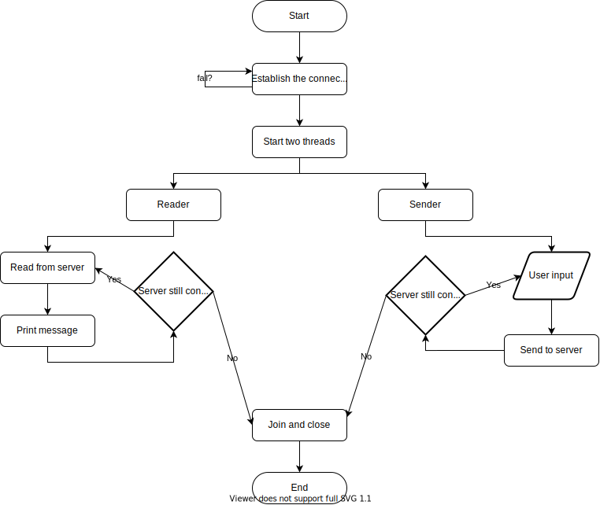
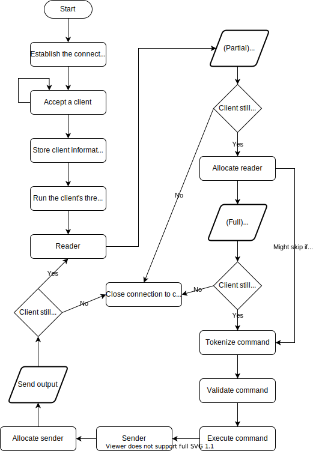

Table of contents
Introduction
Train manager is a command line interface application that provides users with information regarding domestic trains' timetables in Romania. The entire logic behind the application is done in the server, the clients only send commands and receive data from the server. The server provides the data used by Cfr Călători, cloning part of their functionality. The database inquired for this project is an .xml file (as this is how Cfr Călători stores their data) so an xml parser was used. Additional information (more in depth code details) about classes, class methods and members can be found in the project's source files as Doxygen comments. (Disclosure: code snippets in this documentation may not be up to date)
Technologies used
TCP Connection oriented interaction between the server and the clients. Due to the error checking, 3 way handshaking and data retransmission, this type of connection is more reliable, but also slower. Since accuracy is arguably more important than low latency, a TCP connection was employed for all communications, rather than a faster, yet less reliable UDP one.
STL The standard template library provides data structures that are a must have in all C++ projects. In this project, std::pair, std::string, std::vector, std::unordered_map, std::unordered_set were made use of.
Pugixml is the api used to parse the xml file. It provides functions that can load, traverse and modify data in the file. The internal data is stored as a tree (more exactly, a DOM-like object). Even though memory and speed improvements have been made at the cost of not validating data, it is assumed that the xml file is valid. Despite using such a rich library, only several methods are used in order to achieve the project's goal.
App architecture
Client

Server

Implementation details
- Client
- Server
- Both (similarities)
- Use cases
- Preferred behaviour the client tries to (and knows how to) get information about two trains:
- New client The unexperienced client has no idea how to use the system:
- Bad client The evil client tries to find exploits: by entering a command longer than the available buffer (of constant size), the command will be invalidated and the connection will be closed. Entering new lines or random unicode characters will do nothing. Entering EOF will cause the client to no longer be able to send commands. Sending a command that outputs Thus, the server will not crash due to user input.
Brief The client side of the application is relatively straight forward: once a connection to the server is established, the client is free to receive and send messages until they quit, unexpectedly close the application or lose the connection to the server. The first function that is called in the client is makeConnection(), a function will attempt several times to establish a connection and that throws if unable to connect.
{
if ((serverFD = socket(AF_INET, SOCK_STREAM, 0)) < 0)
throw ConnectionException("Socket creation error");
serv_addr.sin_family = AF_INET;
serv_addr.sin_port = htons(PORT);
if (inet_pton(AF_INET, "127.0.0.1", &serv_addr.sin_addr) <= 0)
throw ConnectionException("IPv4 address conversion error");
const unsigned RETRY_ATTEMPTS = 5, TIME = 1;
LoadingBar bar(RETRY_ATTEMPTS, TIME);
for (unsigned i = 0; i < RETRY_ATTEMPTS; i++)
if (connect(serverFD, (struct sockaddr *)&serv_addr, sizeof(serv_addr)) < 0)
{
char buf[64];
unsigned seconds = TIME + i * 2;
sprintf(buf, "%u/%u Connection failed, retrying in %u seconds" , i + 1, RETRY_ATTEMPTS, seconds);
std::cout << buf << std::flush;
bar.update(seconds);
}
else
{
connected = true;
return;
}
throw ConnectionException("Server connection error");
}
Communication After connecting to the server, two threads are created: a reader and a sender that allow for continuous and uninterrupted data transfer. Since the data is plaintext, it can be easily printed. The send thread reads the client input line by line, while the read thread reads data from the server by calling two helper functions: allocateReader() and split() that extract the data, separating it from the byte size and padding (see Data transfer).
Brief The server side of the application is more complex because it manages connections with multiple clients at a time and executes their commands while also avoiding race conditions. Similar to the client, the first method called is makeConnection(), a function that throws if unable to connect.
{
int optVal = 1;
if ((socketFD = socket(AF_INET, SOCK_STREAM, 0)) == 0)
throw ConnectionException("Socket creation error");
if (setsockopt(socketFD, SOL_SOCKET, SO_REUSEADDR, &optVal, sizeof(optVal)))
throw ConnectionException("Could not attach socket to port (setsockopt)");
address.sin_family = AF_INET;
address.sin_addr.s_addr = INADDR_ANY;
address.sin_port = htons(PORT);
if (bind(socketFD, (struct sockaddr *)&address, sizeof(address)) < 0)
throw ConnectionException("Could not attach socket to port (bind)");
if(listen(socketFD, 3) < 0)
throw ConnectionException("Could not listen from the server!");
}
Main loop After establishing the connection, the server's main loop accepts clients, sends them the message of the day and stores them into an unordered map. This thread is equivalent to the main thread, upon finishing its execution (which may only occur in the case of an uncaught exception) it closes the server (realistically this will never happen). The server will only send data when requested. For each client the runIndividual() method is called that creates a reader thread, while the main thread will delete the client entry in the unordered map upon disconnection (see Connection loss).
Communication Sending and reading data is the same as on the client side (see Data transfer), except that the client input is also parsed. This input is tokenized, validated in order to check if the requested action is supported and if the argument count is correct, normalized and finally executed.
Data normalization All client input and replaced by their non-diacritics equivalent (e.g. ”ă”, ”â” become ”a”). In addition, functions that find station names also accept partial and close matches (by using Levenshtein distance), however exact matches are prioritized. Find functions return multiple match values like a real life search bar. For example, "cluj" will find the train stations "cluj napoca", "cluj napoca est" and "iaai" will find "iasi".
File loading When started, the server will call the getFile() method that will load the locally saved xml file (if it exists). Upon failure (file could not be found), it will attempt to download the file (using the utilitary wget) from a public source (not shown in the code example). In addition to loading the file, this function will also store the station names and train numbers in member variables in order for them to be validated faster (not shown here). This operation is thread safe and will always succeed to load the file (except if the source is down, which is unlikely).
{
const std::string localPath = "resources/cfr_2021.xml";
const std::string web = "...";
const std::string args = "--tries=3 -O " + localPath;
if (!std::filesystem::exists(localPath))
{
std::lock_guard
LOG_DEBUG("Xml does not exist locally, attempting to download");
if (system(("wget " + web + args).c_str()) < 0)
LOG_DEBUG("Xml failed to download");
else
LOG_DEBUG("Xml downloaded");
}
if (!doc.empty())
{
LOG_DEBUG("Loaded xml");
doc.load_file(localPath.c_str());
}
}
Protocol Commands may have a fixed or a flexible number of arguments (or optional). As of yet, the supported commands are:
| Command name | Mandatory args1 | Optional args1 | Effect |
|---|---|---|---|
| today | 2 (city names) |
any2 | Prints the arrival and destination times of trains in given stations It first prints a verbose result (all intermediary stations and time stamps) and then a brief one (only start and destination stations with their respective time stamps) that is omitted if there are no intermediary stations (see Use cases) |
| departures | 2 (city name, delta3) |
any2 | Prints the trains that depart from the given station in the upcoming delta3 time
Similarly to today, two results are printed: a verbose and a brief one |
| arrivals | 2 (city name, delta3) |
any2 | Prints the trains that arrive at the given station in the upcoming delta3
time Similarly to today, two results are printed: a verbose and a brief one |
| late | 2 (city name, delta3) |
any2 | Proposes a delay for a given train, future calls to today, departures and arrivals will be altered |
| help | 0 | 1 (specific command) |
Prints general help information or specific to a command |
| quit | 0 | 0 | Shuts down the client connection, this command doesn't reach the server |
1An argument is a word separated by at least one space character, or
one of the following: ,;'?. The period (.)
is not a valid delimiter since some stations use this in their name.
2City names can be longer than a single word, however partial
matches will return more results.
3Delta can be either a number or a literal. If it's only
formed by digits, those are interpreted as seconds. Otherwise, the literal is evaluated: s represents seconds,
m represents minutes and h represents hours.
The digits before these characters are added up by category. For example: "1000" and "1000s"
translate to a delta of 1000 seconds,
"10m" is 10 minutes, "15m45s" is 15 minutes and 45 seconds, "10m2s25m" is 35 minutes and 2
seconds.
All commands (apart from help and quit) have to search for the user inputted station or train name. These names are cached when the server starts (and getFile() is called, see File loading). In case of total mismatch (no exact, partial or close matches are found) the functions are considerably faster, having to only iterate over ≈ 1500 unique station names or ≈ 1200 unique train names, depending on the command issued, instead of the whole xml (≈ 30.000 stations and ≈ 1200 trains). Of course, this adds unnecessary checks even though the station names might be correct, but this is only equal to 1/60 of the time to actually find the stations (yes, this was timed).
Commands that are received by the server (all but quit) are separate classes that implement the Command abstract class. These commands are not stand-alone, and require the data in the base class (pointers to data from CommandParser, passed at initialization and some member functions). A better Command Pattern demonstration would have an interface as its base class, but since the commands are centered around the same data, it seemed better practice to share the functionality whenever needed.
Logging Client to server and server to client messages are logged, as well as debug related information such as: clients being accepted, clients losing connection, inner server data changes: files being downloaded, memory usage, etc. The logger crates a text file on each run with the current time as its name and previous log files are archived. Logging is thread safe and (purposefully) slow in order to log everything in case of crashes, however it can be disabled by removing compile time defines (ENABLE_COMM_LOGGING, ENABLE_DEBG_LOGGING in the server's root Makefile).
Data transfer In order to
efficiently send and read data, messages coming from both the client and server use the format
[byte_size][padding][message], such that upon sending, the reader is
able to allocate a buffer with the exact size of data to be received. As far as data types are
concerned, byte_size is size_t, padding and message are C-style character
arrays (char *). An initial buffer is first used to read at least the
first part of the message ([byte_size][padding]), after which, if
needed (message length is longer than the size of the initial buffer, most common case), the
read function will be called again. Example
of sender and reader allocation:
{
const size_t bytes = str.size() * sizeof(str[0]) + 1;
const size_t dataSize = bytes + strlen(PADDING) + 12;
char *allocated = new char[dataSize]{};
snprintf(allocated, dataSize, "\%lu\%s\%s", bytes, PADDING,str.c_str());
return {allocated, dataSize};
}
{
auto [msg, size] = split(buff);
char *wholeMessage = new char[size]{};
strcpy(wholeMessage, msg);
return {wholeMessage, size};
}
std::pair<const char *, size_t> IOManager::split(const char *str)
{
const char *paddingStart = strstr(str, PADDING);
if (paddingStart == nullptr)
throw std::runtime_error("Padding not found");
char length[BUFF_SIZE + 1]{};
for (int i = 0; i < paddingStart - str; i++)
length[i] = str[i];
return {paddingStart + strlen(PADDING), atoi(length)};
}
The purpose of the padding is only to differentiate the message size from the actual message and is composed of distinctive characters. All read/send operations are wrapped by functions in the IOManager class.
Connection loss Read and send operations check if the buffer received or sent match their size. In the eventuality that the sizes are different, an exception is thrown, however, if the value returned by the system read() or write() corresponds to an error, the connection is closed, assuming that the client or server has abruptly disconnected. In case the client loses connection, the server will be unaffected, and able to accept other (including the same) clients. If the server shuts down, all clients' connections will be closed as no more data can be received. The read() and write() IOManager methods toggle the isConnected client member variable if the connection is lost, thus the runIndividual() method can efficiently remove the client from the clients map.
Unexpected/wrong client behaviour Upon using commands that generate an empty output, nonexistent commands or commands with a wrong number of arguments, the client will be advised on their proper usage.
The server is started. Multiple client connections are made. The following scenarios can be assumed (non-essential data is omitted by "[...]"):
---Welcome to Train Manager---
Today is 25/12/2021(Saturday)
today iasi bucuresti
Found 5 trains:
1. IR1660
(06:20 -> 06:24, 04 min) Iaşi -> Nicolina
(06:25 -> 06:31, 06 min) Nicolina -> Ciurea Hm.
(06:31 -> 06:44, 13 min) Ciurea Hm. -> Bârnova Hm.
[...]
(12:40 -> 12:43, 03 min) P. mac. R1 Buciumeni -> Chitila
(12:43 -> 12:54, 11 min) Chitila -> Bucureşti Nord Gr.A
2. IR1662
(14:15 -> 14:19, 04 min) Iaşi -> Nicolina
(14:21 -> 14:27, 06 min) Nicolina -> Ciurea Hm.
(14:27 -> 14:40, 13 min) Ciurea Hm. -> Bârnova Hm.
[...]
(20:35 -> 20:37, 02 min) P. mac. R1 Buciumeni -> Chitila
(20:37 -> 20:47, 10 min) Chitila -> Bucureşti Nord Gr.A
3. IR1664
(15:58 -> 16:02, 04 min) Iaşi -> Nicolina
[...]
(22:07 -> 22:17, 10 min) Chitila -> Bucureşti Nord Gr.A
4. IR1854-1
(23:13 -> 23:27, 14 min) Iaşi -> Leţcani
[...]
(06:08 -> 06:20, 12 min) Chitila -> Bucureşti Nord Gr.A
5. IR-N1668
(23:15 -> 23:19, 04 min) Iaşi -> Nicolina
[...]
(05:45 -> 05:55, 10 min) Chitila -> Bucureşti Nord Gr.A
At a glance (2/5 trains available)
Number Depart Arrival Time
[x] 1. IR1660 (06:20 -> 12:54, 06:34) Iaşi -> Bucureşti Nord Gr.A
[x] 2. IR1662 (14:15 -> 20:47, 06:32) Iaşi -> Bucureşti Nord Gr.A
[x] 3. IR1664 (15:58 -> 22:17, 06:19) Iaşi -> Bucureşti Nord Gr.A
----------
[o] 4. IR1854-1 (23:13 -> 06:20, 07:07 +1day) Iaşi -> Bucureşti Nord Gr.A
[o] 5. IR-N1668 (23:15 -> 05:55, 06:40 +1day) Iaşi -> Bucureşti Nord Gr.A
departures cluj 10m
Number Depart Arrival Time
[o] 1. R4705 (13:20 -> 13:25, 00:05) Cluj Napoca -> Baciu Triaj Hm.
[o] 2. R4703 (13:20 -> 13:26, 00:06) Cluj Napoca Est -> Apahida
Today is 25/12/2021(Saturday)
today
Command today has 2 mandatory arguments, 0 provided
help
Supported commands:
today [start] [dest] (get today's trains schedules from [start] to [dest])
departures [start] [delta] (get the departures from [start] [...])
arrivals [dest] [delta] (get the arrivals to [dest] [...]
quit (close the connection)
help [command] (get more detailed help about a command)
today brasov
Command today has 2 mandatory arguments, 1 provided
depart
Command depart not found
Conclusions
This application can be used to accurately tell the domestic timetable of trains in Romania, cloning part of Cfr Călători's functionality. Improvement ideas (proposed, implemented and not implemented) along the project's development that do not necessarily have to do with the main project's idea:
-
Code related/server only
- fix a bug where read/send operations have to check for empty strings (not fatal, just annoying to have to always consider this)
- delays will be reset the upcoming day
- broadcast feature for the server, maybe also server only commands
- automatically download the latest data (for 2022, 2023 or whenever it changes)
- fewer hardcoded variables all data is as dynamic as it can be, based on the xml file
- efficiency: cache the results for sub-linear searches only for failure
-
User convenience/client only
- make a minimal UI
- make the client application cross platform
- more commands: search by train number or type late command does this
- make searches more permissive: substrings, close matches done
- add reconnect system in case the server disconnects only implemented when the user starts their application
Bibliography
This project could not be finalized without the help of:
- Tutorials from Geeks for Geeks
- https://www.geeksforgeeks.org/socket-programming-cc/
- https://www.geeksforgeeks.org/tcp-server-client-implementation-in-c/
- Arseny Kapoulkine's xml parser